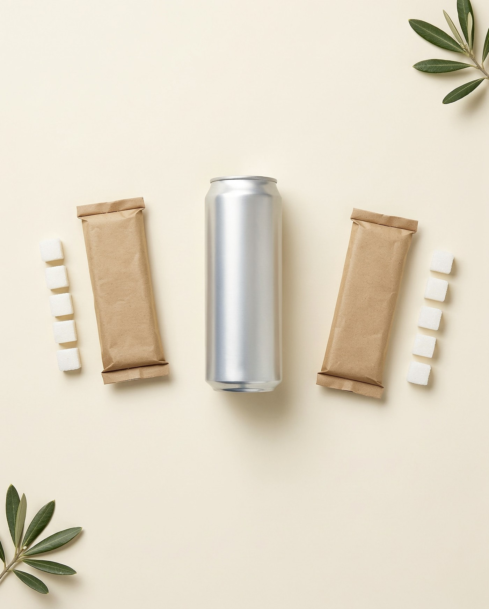

Fit görünen
şekerler
Enerji içeceği ve "sağlıklı" barlar: paketteki şeker kaç küp ediyor?

Pakette kaç küp şeker var?
etiket örnekleri
Enerji içeceği
500 ml kutu
55 g
≈ 14 küp
Enerji içeceği
250 ml kutu
27 g
≈ 7 küp
Bazı "protein" barlar
tek bar
17–29 g
≈ 4–7 küp
Şekeri düşük bar
tek bar
1–8 g
≈ 0–2 küp
1 küp = 4 g şeker
≈ 6 küp
DSÖ'nün ideal hedefi: günde 25 g'ın altında serbest şeker. 500 ml'lik tek kutu bunun iki katından fazla.
Markette 5 saniyelik kontrol
Etikette "şekerler" satırına bak, paketin tamamını hesapla.
Bar alırken tek barda 5 g'ın altı iyi bir başlangıç.
Zero da çözüm değil: şeker yok ama tatlandırıcı ve kafein var. En iyi alternatif su.
RED BULL (250 ml: 27 g) · MONSTER İNGİLTERE ETİKETİ (500 ml: 55 g) · ABD PROTEİN BAR ETİKETLERİ · DSÖ ŞEKER KILAVUZU 2015 · DSÖ TATLANDIRICI KILAVUZU 2023 · RAKAMLAR ÜRÜNE GÖRE DEĞİŞİR